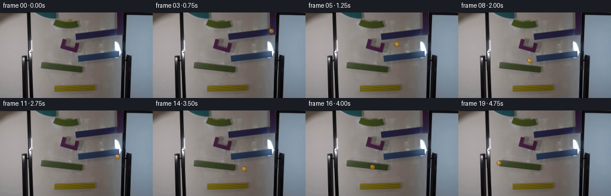
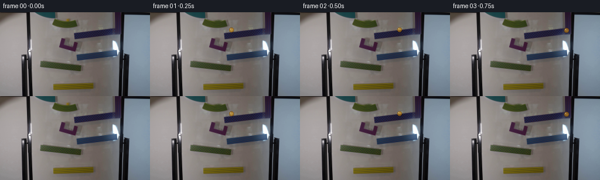
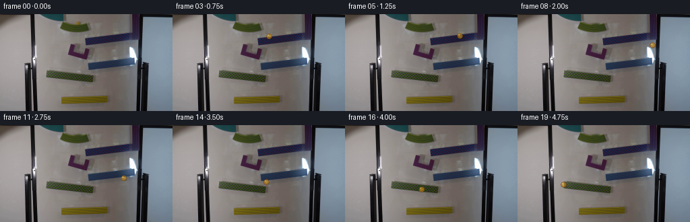
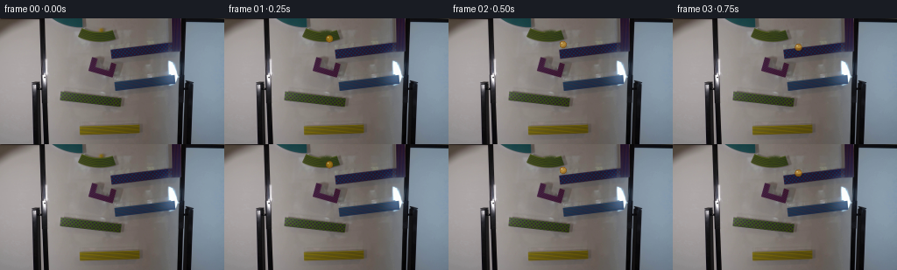

CODING AGENTS AS PIXEL WORLD MODELS
traex/GPT-5.6-Sol · 0104
点击播放 · 原生 RGB 像素
逐轮保存的候选
回放视频、检查图与代码变化。
每份候选均可单独播放。实际图片检查记录在下方工具轨迹中。
候选 01播放与检查图
点击播放 · 原生 RGB 像素


展开代码变化
--- 上一保存版本
+++ 本次保存版本
@@ -0,0 +1,117 @@
+"""Animate the yellow glass marble through the photographed magnetic marble run."""
+from pathlib import Path
+import cv2
+import numpy as np
+from PIL import Image
+import artifact_io
+
+ROOT = Path(__file__).resolve().parent
+
+
+def line_y(x, a, b):
+ (x0, y0), (x1, y1) = a, b
+ return y0 + (y1-y0) * ((x-x0) / (x1-x0))
+
+
+def catmull_rom(points, samples_per=28):
+ """Dense C1 curve through waypoints, used only for time interpolation."""
+ p = np.asarray(points, np.float32)
+ ext = np.vstack([p[0], p, p[-1]])
+ out = []
+ for i in range(1, len(ext)-2):
+ a,b,c,d = ext[i-1:i+3]
+ for u in np.linspace(0, 1, samples_per, endpoint=False):
+ u2,u3=u*u,u*u*u
+ out.append(.5*((2*b)+(-a+c)*u+(2*a-5*b+4*c-d)*u2+(-a+3*b-3*c+d)*u3))
+ out.append(p[-1])
+ return np.asarray(out)
+
+
+def arclength_sample(curve, u):
+ seg=np.linalg.norm(np.diff(curve,axis=0),axis=1)
+ s=np.r_[0,np.cumsum(seg)]; target=np.clip(u,0,1)*s[-1]
+ j=min(np.searchsorted(s,target),len(curve)-1)
+ if j==0:return curve[0]
+ q=(target-s[j-1])/max(s[j]-s[j-1],1e-6)
+ return curve[j-1]*(1-q)+curve[j]*q
+
+
+def draw_glass_marble(frame, cx, cy, radius=4.25, phase=0.0):
+ """Small translucent amber sphere with contact shadow and internal caustic."""
+ h,w=frame.shape[:2]
+ # soft shadow down-right, clipped naturally by frame
+ yy,xx=np.mgrid[:h,:w]
+ sh=np.exp(-(((xx-(cx+1.1))/4.7)**2+((yy-(cy+2.7))/2.0)**2)*1.7)
+ frame[:] = np.clip(frame.astype(np.float32)*(1-.24*sh[...,None]),0,255).astype(np.uint8)
+
+ x0=max(0,int(np.floor(cx-radius-2))); x1=min(w,int(np.ceil(cx+radius+3)))
+ y0=max(0,int(np.floor(cy-radius-2))); y1=min(h,int(np.ceil(cy+radius+3)))
+ if x1<=x0 or y1<=y0:return
+ Y,X=np.mgrid[y0:y1,x0:x1]; dx=X-cx; dy=Y-cy
+ rr=np.sqrt(dx*dx+dy*dy); inside=rr<=radius
+ if not inside.any():return
+ old=frame[y0:y1,x0:x1].astype(np.float32)
+ # glass transmits the scene, warmed by dense golden glass at the rim
+ rim=np.clip((rr/radius)**2,0,1)
+ alpha=np.where(inside,.55+.20*rim,0)[...,None]
+ gold=np.zeros_like(old)
+ gold[...,0]=205-42*rim; gold[...,1]=145-48*rim; gold[...,2]=24-12*rim
+ mixed=old*(1-alpha)+gold*alpha
+ # dark amber lower/right rim and a rotating internal streak
+ edge=np.clip((rr-(radius-1.25))/1.25,0,1)*inside
+ mixed*= (1-.25*edge[...,None])
+ ang=phase
+ streak=np.exp(-((dx*np.cos(ang)+dy*np.sin(ang)-.5)**2/.75 +
+ (-dx*np.sin(ang)+dy*np.cos(ang)+.2)**2/8.0))*inside
+ mixed += streak[...,None]*np.array([25.,19.,3.])
+ # crisp cool-white specular glint at upper left
+ hi=np.exp(-((dx+1.45)**2+(dy+1.55)**2)/.62)*inside
+ mixed=mixed*(1-hi[...,None]*.72)+np.array([248.,244.,197.])*hi[...,None]*.72
+ # one-pixel amber outline, anti-aliased with radial coverage
+ cover=np.clip(radius+.55-rr,0,1)[...,None]
+ result=old*(1-cover)+mixed*cover
+ frame[y0:y1,x0:x1]=np.clip(result,0,255).astype(np.uint8)
+
+
+def make_clean_plate(src):
+ # Frame zero contains the marble at (115,13). Remove just that sphere for
+ # subsequent frames; TELEA interpolation preserves the board/ramp behind it.
+ mask=np.zeros(src.shape[:2],np.uint8)
+ cv2.circle(mask,(115,13),6,255,-1,cv2.LINE_AA)
+ plate=cv2.inpaint(cv2.cvtColor(src,cv2.COLOR_RGB2BGR),mask,3,cv2.INPAINT_TELEA)
+ return cv2.cvtColor(plate,cv2.COLOR_BGR2RGB)
+
+
+def main():
+ first=np.asarray(Image.open(ROOT/'first_frame.png').convert('RGB'),dtype=np.uint8)
+ assert first.shape==(144,256,3)
+ plate=make_clean_plate(first)
+
+ # Geometry inferred from the photographed run. The ball starts above the
+ # high left-to-right chute, reverses on the middle chute, then reverses once
+ # more on the low chute. Short near-vertical arcs model the end transfers.
+ waypoints=[
+ (115,13),(119,22),(130,28),(150,31),(174,29),(191,27),
+ (198,30),(199,39),(192,47),(172,51),(145,54),(121,57),(103,61),
+ (99,67),(105,76),(125,82),(151,84),(178,81),(198,77),
+ (204,80),(203,88),(195,94),(174,96),(150,98),(124,96),
+ (99,93),(78,90),(68,88)
+ ]
+ curve=catmull_rom(waypoints,24)
+
+ frames=[first.copy()]
+ # First quarter-second acts as a visible release; then gravity accelerates
+ # the marble gently. Ease-out gives realistic higher speed down the run.
+ for k in range(1,20):
+ t=k/19.0
+ u=1-(1-t)**1.28
+ x,y=arclength_sample(curve,u)
+ fr=plate.copy()
+ draw_glass_marble(fr,float(x),float(y),4.25,phase=9.0*u)
+ frames.append(fr)
+ frames=np.stack(frames).astype(np.uint8)
+ frames[0]=first
+ artifact_io.save(frames,ROOT)
+
+if __name__=='__main__':
+ main()
候选 02播放与检查图
点击播放 · 原生 RGB 像素


展开代码变化
--- 上一保存版本
+++ 本次保存版本
@@ -87,24 +87,23 @@
assert first.shape==(144,256,3)
plate=make_clean_plate(first)
- # Geometry inferred from the photographed run. The ball starts above the
- # high left-to-right chute, reverses on the middle chute, then reverses once
- # more on the low chute. Short near-vertical arcs model the end transfers.
+ # Geometry inferred from the photographed run. The ball starts over the
+ # high chute, follows it to the right-hand drop, and then runs leftward over
+ # the two lower magnetic sections. Short curves model the end transfers.
waypoints=[
- (115,13),(119,22),(130,28),(150,31),(174,29),(191,27),
- (198,30),(199,39),(192,47),(172,51),(145,54),(121,57),(103,61),
- (99,67),(105,76),(125,82),(151,84),(178,81),(198,77),
- (204,80),(203,88),(195,94),(174,96),(150,98),(124,96),
- (99,93),(78,90),(68,88)
+ (115,13),(117,20),(127,28),(146,33),(169,32),(190,29),
+ (197,32),(200,42),(199,57),(199,69),(195,76),(178,79),
+ (157,82),(139,84),(133,89),(129,94),(111,95),(91,92),
+ (72,89),(68,88)
]
curve=catmull_rom(waypoints,24)
frames=[first.copy()]
- # First quarter-second acts as a visible release; then gravity accelerates
- # the marble gently. Ease-out gives realistic higher speed down the run.
+ # First quarter-second acts as a visible release; gravity then builds speed
+ # gently throughout the run.
for k in range(1,20):
t=k/19.0
- u=1-(1-t)**1.28
+ u=t**1.08
x,y=arclength_sample(curve,u)
fr=plate.copy()
draw_glass_marble(fr,float(x),float(y),4.25,phase=9.0*u)
可观测工具轨迹
实际执行的命令与返回图片。
命令 1exit 0
/bin/bash -lc "cat GENERATION_RULES.md && printf '\\n---PROMPT---\\n' && cat prompt.txt"
命令 2exit 127
/bin/bash -lc "find . -maxdepth 2 -type f -printf '%p\\n' | sort && file first_frame.png"
命令 3exit 0
/bin/bash -lc "python3 - <<'PY'
from PIL import Image
import numpy as np
im=np.array(Image.open('first_frame.png').convert('RGB'))
print(im.shape, im.dtype)
# quantized dominant colors
q=(im//16)*16
u,c=np.unique(q.reshape(-1,3),axis=0,return_counts=True)
for i in np.argsort(c)[-30:][::-1]: print(c[i],u[i])
print('mean,std,min,max',im.mean((0,1)),im.std((0,1)),im.reshape(-1,3).min(0),im.reshape(-1,3).max(0))
PY"命令 4exit 0
/bin/bash -lc "python3 - <<'PY'
from PIL import Image
import numpy as np
from scipy.ndimage import label, center_of_mass
im=np.array(Image.open('first_frame.png').convert('RGB'))
r,g,b=im.transpose(2,0,1)
# list masks likely yellow
for cond,name in [((r>100)&(r>g*1.1)&(g>b*1.15),'yellow loose'),((r>130)&(g>90)&(b<100)&(r>g*1.05),'yellow'),((r>170)&(g>120)&(b<120),'brightyellow'),((b>r*1.2)&(b>g*1.1),'blue'),((r>g*1.3)&(r>b*1.3),'red')]:
L,n=label(cond)
comps=[]
for j in range(1,n+1):
yy,xx=np.where(L==j); z=len(xx)
if z>=2: comps.append((z,round(xx.mean(),1),round(yy.mean(),1), (xx.min(),yy.min(),xx.max(),yy.max())))
print('\\n',name,'count',cond.sum(),'components',sorted(comps,reverse=True)[:30])
# print rows blocks average/color edge maybe image layout
PY"命令 5exit 0
/bin/bash -lc "python3 - <<'PY'
from PIL import Image
import numpy as np
from scipy.ndimage import sobel
im=np.array(Image.open('first_frame.png').convert('RGB')).astype(float)
# averages 4x4, brightness chars
for sy,sx in [(4,4),(6,4)]:
a=im[:144//sy*sy,:256//sx*sx].reshape(144//sy,sy,256//sx,sx,3).mean((1,3))
lum=a@np.array([.2126,.7152,.0722])
chars=' .,:;irsXA253hMHGS#9B&@'
print('\\nLUM',a.shape)
for row in lum:
print(''.join(chars[min(len(chars)-1,int(v/256*len(chars)))] for v in row))
# hue dominant with 4x4 requiring sat
A=im.reshape(36,4,64,4,3).mean((1,3)); mx=A.max(2); mn=A.min(2)
print('\\nCOLORS')
for y in range(36):
s=''
for x in range(64):
r,g,b=A[y,x]; d=max(r,g,b)-min(r,g,b)
if d<15: c=' '
elif r==max(r,g,b) and g>b*1.1: c='Y'
elif r==max(r,g,b): c='R'
elif g==max(r,g,b) and r>b*1.1:c='Y'
elif g==max(r,g,b):c='G'
else:c='B'
s+=c
print(s)
PY"命令 6exit 0
/bin/bash -lc "cat > .tmp/analyze.py <<'PY'
import cv2,numpy as np
im=cv2.imread('first_frame.png'); g=cv2.cvtColor(im,cv2.COLOR_BGR2GRAY)
for thr in [20,40,60,80]:
lines=cv2.HoughLinesP(cv2.Canny(g,50,150),1,np.pi/180,threshold=thr,minLineLength=15,maxLineGap=4)
print('thr',thr)
if lines is not None:
z=[]
for l in lines[:,0]:
x1,y1,x2,y2=map(int,l); le=np.hypot(x2-x1,y2-y1); ang=np.degrees(np.arctan2(y2-y1,x2-x1))
z.append((round(le),round(ang,1),(x1,y1,x2,y2)))
print(*sorted(z,reverse=True)[:100],sep='\\n')
# per 8x8 mean exact RGB
rgb=im[:,:,::-1]
for y in range(0,144,8):
print('ROW',y)
for x in range(0,256,8):
q=rgb[y:y+8,x:x+8].mean((0,1)).astype(int)
print(f'{x:3}:{q[0]:3},{q[1]:3},{q[2]:3}',end=' | ')
print()
PY
python3 .tmp/analyze.py > .tmp/analysis.txt
sed -n '1,180p' .tmp/analysis.txt"命令 7exit 0
/bin/bash -lc "python3 - <<'PY'
from PIL import Image
import numpy as np
im=np.array(Image.open('first_frame.png').convert('RGB'))
for y in range(5,23):
print('y',y, end=' ')
for x in range(85,130):
r,g,b=im[y,x]
# color char + lum grade
if r>g*1.1 and g>b*1.1:c='Y'
elif g>r*1.1 and g>b*1.1:c='G'
elif b>r*1.15:c='B'
elif max(r,g,b)<50:c='#'
elif sum((np.array([r,g,b])>150))>=2:c='.'
else:c=' '
print(c,end='')
print()
print('RGB around')
for y in range(8,19):
print(y,[tuple(im[y,x]) for x in range(108,124)])
PY"命令 8exit 0
/bin/bash -lc "python3 - <<'PY'
import cv2,numpy as np
im=cv2.imread('first_frame.png')[:,:,::-1]
m=np.zeros(im.shape[:2],np.uint8);cv2.circle(m,(115,13),6,255,-1)
b=cv2.inpaint(im[:,:,::-1],m,3,cv2.INPAINT_TELEA)[:,:,::-1]
for y in range(7,20):
print(y, end=' ')
for x in range(108,123):
d=np.linalg.norm(im[y,x].astype(float)-b[y,x])
print('%3d'%d,end=' ')
print()
print('max',np.abs(im.astype(int)-b.astype(int)).max(), 'meanmask',np.abs(im.astype(int)-b.astype(int))[m>0].mean((0)))
PY"命令 9exit 0
/bin/bash -lc 'cat artifact_io.py'
命令 10exit 0
/bin/bash -lc "python3 - <<'PY'
import cv2,numpy as np
im=cv2.imread('first_frame.png'); gray=cv2.cvtColor(im,cv2.COLOR_BGR2GRAY)
for p2 in [8,10,12,15,20]:
c=cv2.HoughCircles(gray,cv2.HOUGH_GRADIENT,dp=1,minDist=8,param1=60,param2=p2,minRadius=2,maxRadius=8)
print('p2',p2)
if c is not None:
for x,y,r in np.round(c[0]).astype(int):
# mean rgb center/region
yy,xx=np.ogrid[:144,:256]; m=(xx-x)**2+(yy-y)**2<=r*r
rgb=im[m][:,::-1].mean(0)
print((x,y,r),rgb.astype(int),end='; ')
print()
PY"命令 11exit 0
/bin/bash -lc "cat > generate.py <<'PY'
\"\"\"Animate the yellow glass marble through the photographed magnetic marble run.\"\"\"
from pathlib import Path
import cv2
import numpy as np
from PIL import Image
import artifact_io
ROOT = Path(__file__).resolve().parent
def line_y(x, a, b):
(x0, y0), (x1, y1) = a, b
return y0 + (y1-y0) * ((x-x0) / (x1-x0))
def catmull_rom(points, samples_per=28):
\"\"\"Dense C1 curve through waypoints, used only for time interpolation.\"\"\"
p = np.asarray(points, np.float32)
ext = np.vstack([p[0], p, p[-1]])
out = []
for i in range(1, len(ext)-2):
a,b,c,d = ext[i-1:i+3]
for u in np.linspace(0, 1, samples_per, endpoint=False):
u2,u3=u*u,u*u*u
out.append(.5*((2*b)+(-a+c)*u+(2*a-5*b+4*c-d)*u2+(-a+3*b-3*c+d)*u3))
out.append(p[-1])
return np.asarray(out)
def arclength_sample(curve, u):
seg=np.linalg.norm(np.diff(curve,axis=0),axis=1)
s=np.r_[0,np.cumsum(seg)]; target=np.clip(u,0,1)*s[-1]
j=min(np.searchsorted(s,target),len(curve)-1)
if j==0:return curve[0]
q=(target-s[j-1])/max(s[j]-s[j-1],1e-6)
return curve[j-1]*(1-q)+curve[j]*q
def draw_glass_marble(frame, cx, cy, radius=4.25, phase=0.0):
\"\"\"Small translucent amber sphere with contact shadow and internal caustic.\"\"\"
h,w=frame.shape[:2]
# soft shadow down-right, clipped naturally by frame
yy,xx=np.mgrid[:h,:w]
sh=np.exp(-(((xx-(cx+1.1))/4.7)**2+((yy-(cy+2.7))/2.0)**2)*1.7)
frame[:] = np.clip(frame.astype(np.float32)*(1-.24*sh[...,None]),0,255).astype(np.uint8)
x0=max(0,int(np.floor(cx-radius-2))); x1=min(w,int(np.ceil(cx+radius+3)))
y0=max(0,int(np.floor(cy-radius-2))); y1=min(h,int(np.ceil(cy+radius+3)))
if x1<=x0 or y1<=y0:return
Y,X=np.mgrid[y0:y1,x0:x1]; dx=X-cx; dy=Y-cy
rr=np.sqrt(dx*dx+dy*dy); inside=rr<=radius
if not inside.any():return
old=frame[y0:y1,x0:x1].astype(np.float32)
# glass transmits the scene, warmed by dense golden glass at the rim
rim=np.clip((rr/radius)**2,0,1)
alpha=np.where(inside,.55+.20*rim,0)[...,None]
gold=np.zeros_like(old)
gold[...,0]=205-42*rim; gold[...,1]=145-48*rim; gold[...,2]=24-12*rim
mixed=old*(1-alpha)+gold*alpha
# dark amber lower/right rim and a rotating internal streak
edge=np.clip((rr-(radius-1.25))/1.25,0,1)*inside
mixed*= (1-.25*edge[...,None])
ang=phase
streak=np.exp(-((dx*np.cos(ang)+dy*np.sin(ang)-.5)**2/.75 +
(-dx*np.sin(ang)+dy*np.cos(ang)+.2)**2/8.0))*inside
mixed += streak[...,None]*np.array([25.,19.,3.])
# crisp cool-white specular glint at upper left
hi=np.exp(-((dx+1.45)**2+(dy+1.55)**2)/.62)*inside
mixed=mixed*(1-hi[...,None]*.72)+np.array([248.,244.,197.])*hi[...,None]*.72
# one-pixel amber outline, anti-aliased with radial coverage
cover=np.clip(radius+.55-rr,0,1)[...,None]
result=old*(1-cover)+mixed*cover
frame[y0:y1,x0:x1]=np.clip(result,0,255).astype(np.uint8)
def make_clean_plate(src):
# Frame zero contains the marble at (115,13). Remove just that sphere for
# subsequent frames; TELEA interpolation preserves the board/ramp behind it.
mask=np.zeros(src.shape[:2],np.uint8)
cv2.circle(mask,(115,13),6,255,-1,cv2.LINE_AA)
plate=cv2.inpaint(cv2.cvtColor(src,cv2.COLOR_RGB2BGR),mask,3,cv2.INPAINT_TELEA)
return cv2.cvtColor(plate,cv2.COLOR_BGR2RGB)
def main():
first=np.asarray(Image.open(ROOT/'first_frame.png').convert('RGB'),dtype=np.uint8)
assert first.shape==(144,256,3)
plate=make_clean_plate(first)
# Geometry inferred from the photographed run. The ball starts above the
# high left-to-right chute, reverses on the middle chute, then reverses once
# more on the low chute. Short near-vertical arcs model the end transfers.
waypoints=[
(115,13),(119,22),(130,28),(150,31),(174,29),(191,27),
(198,30),(199,39),(192,47),(172,51),(145,54),(121,57),(103,61),
(99,67),(105,76),(125,82),(151,84),(178,81),(198,77),
(204,80),(203,88),(195,94),(174,96),(150,98),(124,96),
(99,93),(78,90),(68,88)
]
curve=catmull_rom(waypoints,24)
frames=[first.copy()]
# First quarter-second acts as a visible release; then gravity accelerates
# the marble gently. Ease-out gives realistic higher speed down the run.
for k in range(1,20):
t=k/19.0
u=1-(1-t)**1.28
x,y=arclength_sample(curve,u)
fr=plate.copy()
draw_glass_marble(fr,float(x),float(y),4.25,phase=9.0*u)
frames.append(fr)
frames=np.stack(frames).astype(np.uint8)
frames[0]=first
artifact_io.save(frames,ROOT)
if __name__=='__main__':
main()
PY
python3 generate.py
python3 - <<'PY'
import numpy as np
from PIL import Image
f=np.stack([np.array(Image.open(f'frames/{i:02}.png')) for i in range(20)])
a=np.array(Image.open('first_frame.png').convert('RGB'))
print(f.shape,f.dtype,'frame0 exact',np.array_equal(f[0],a),'changes',[(f[i]"'!=f[i-1]).any(2).sum() for i in range(1,20)])
PY'命令 12exit 0
/bin/bash -lc "python3 generate.py && python3 - <<'PY'
import numpy as np
from PIL import Image
from generate import catmull_rom,arclength_sample
p=[(115,13),(117,20),(127,28),(146,33),(169,32),(190,29),(197,32),(200,42),(199,57),(199,69),(195,76),(178,79),(157,82),(139,84),(133,89),(129,94),(111,95),(91,92),(72,89),(68,88)]
c=catmull_rom(p,24)
print([tuple(np.round(arclength_sample(c,(i/19)**1.08),1)) for i in range(20)])
a=np.array(Image.open('first_frame.png')); b=np.array(Image.open('frames/00.png'))
print('exact',np.array_equal(a,b))
PY"保存候选 2 份；完成命令 12 次；可验证图片返回 0 张。原始 API 响应与完整日志保留在本地。